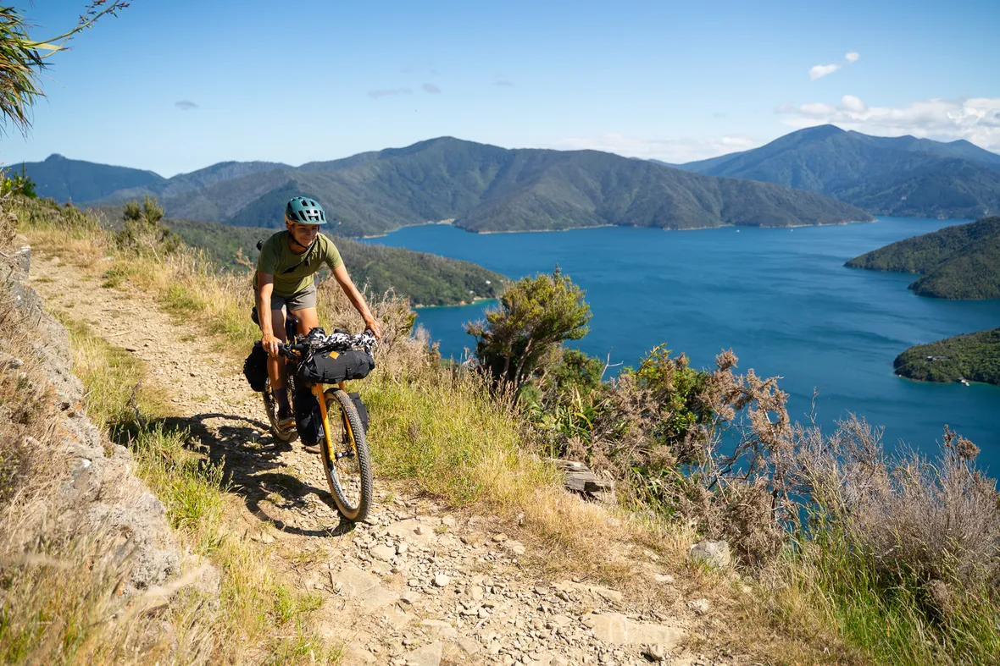

We are Cyclery Raglan, based on the west coast of the North Island, and we do full bikepacking rentals for visiting riders.Based in Raglan on New Zealand’s wild west coast, we build complete bikepacking rental rigs and share the routes worth riding. Whether you’re new to bikepacking or planning your next big adventure, we’ll help you get rolling.
Travel light. Land in Auckland, make your way to Raglan (90 minutes drive), and your bike and kit will be waiting. Auckland gear drop-off is also possible by arrangement. Take a day or two here in this famous fun surf town to shake off the jetlag - then roll out.
